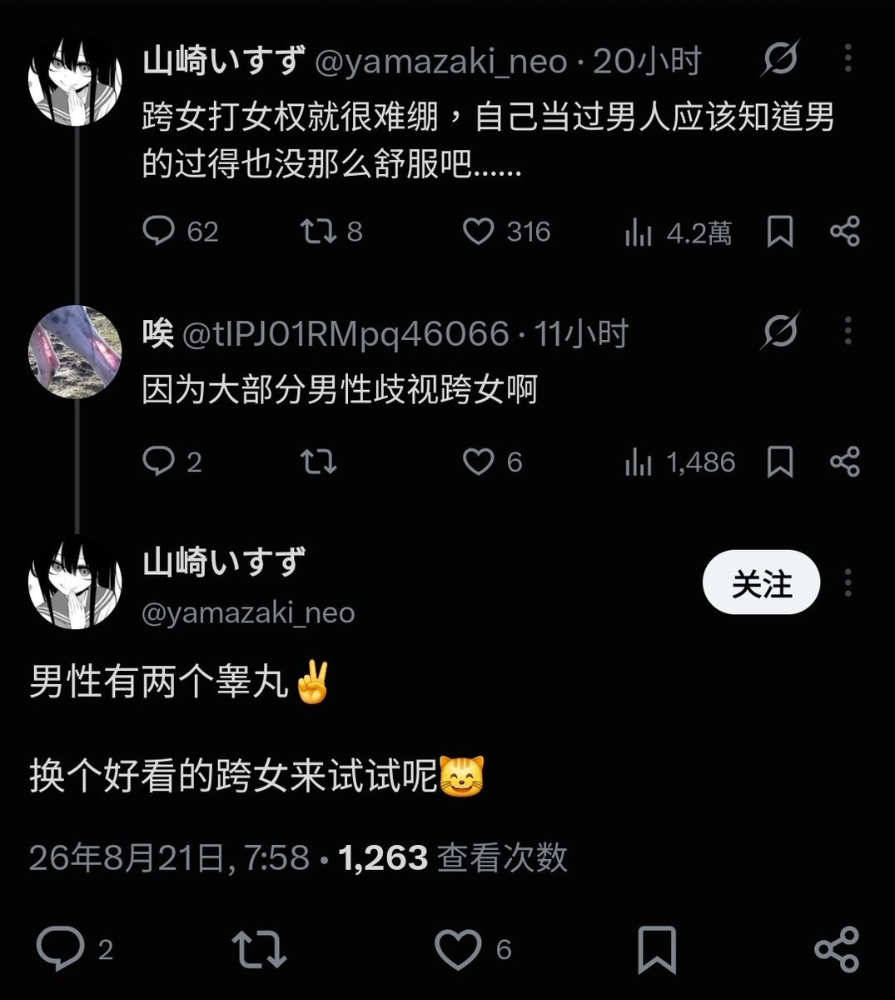

amber🍥
@amber_digit2
@QwQb119 他们不爱听这个 我也觉得讲这个很无聊

Θώθ!!!
@QwQb119
为了反驳而反驳没必要，说因为不够强而没特权，就像说「跨女感觉被歧视是因为不够漂亮」
宣传这种有毒男子气概的理论对谁都没好处，况且如果够强才有特权那就不是专属「男性」的特权。
你本来就应该提及系统性的隐性歧视，那些不需要主动参与、难以察觉的特权，例如「同工不同酬」 https://t.co/CgQjZoyH9F https://t.co/cXX54mWhUe